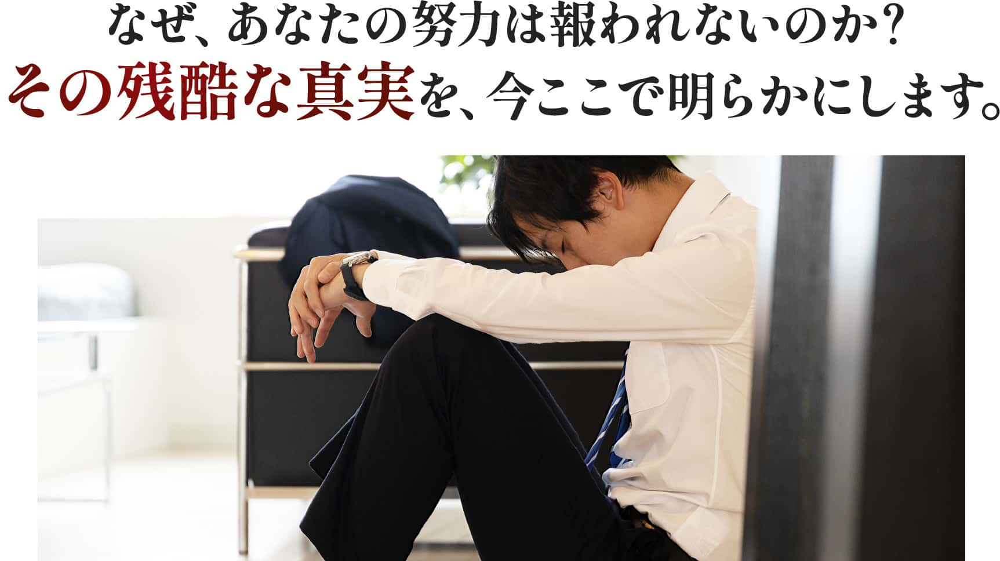
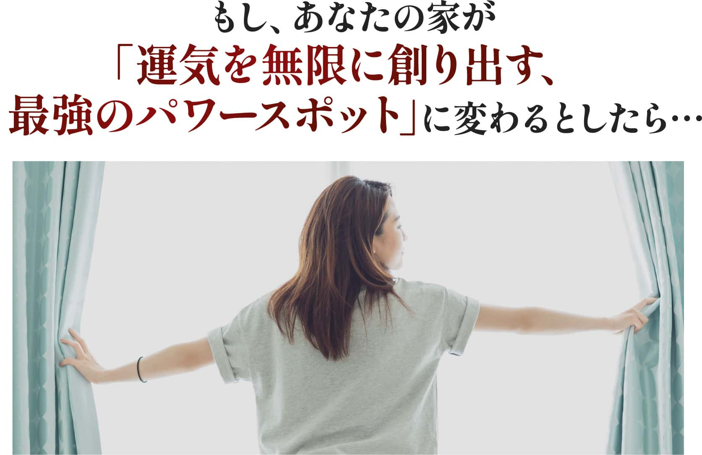
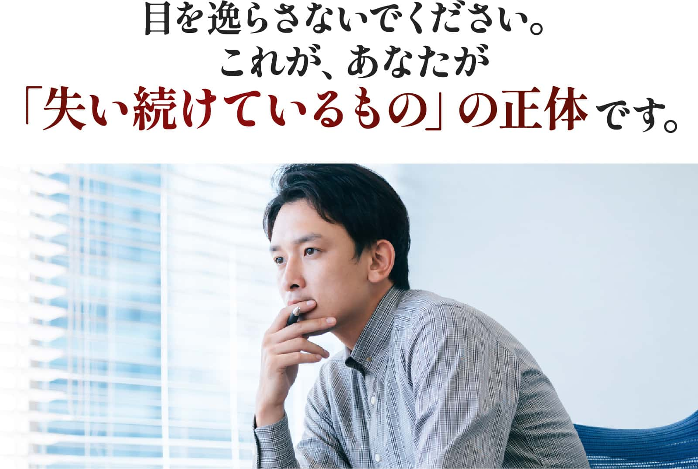
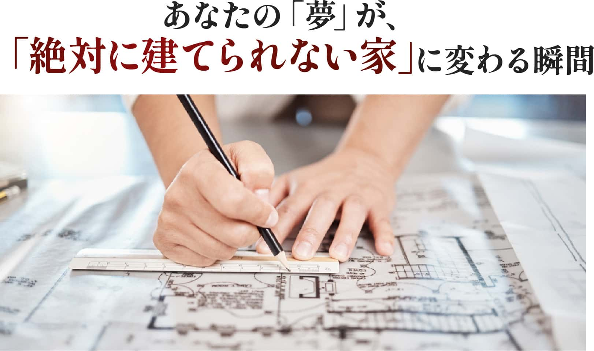
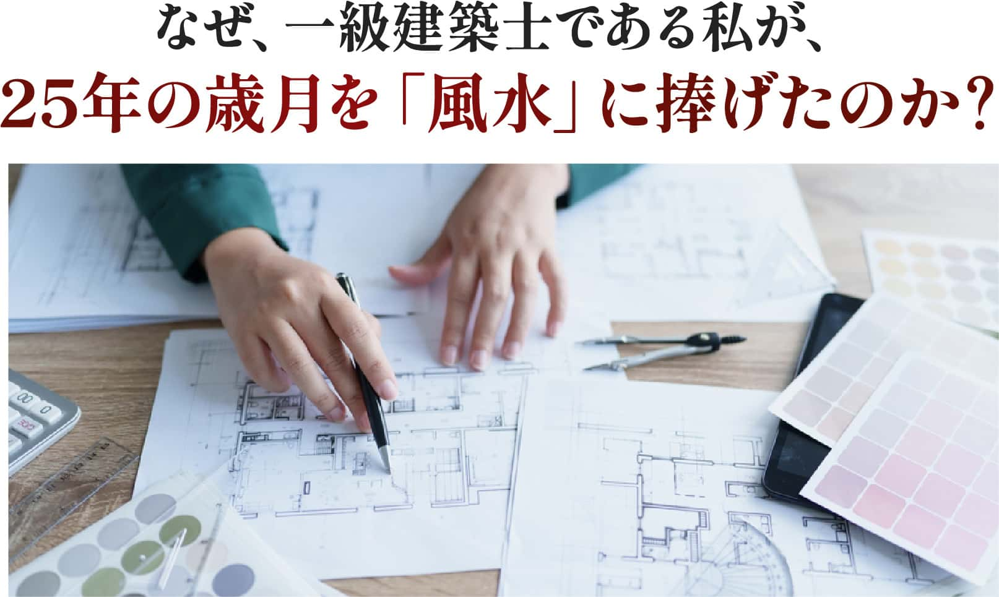
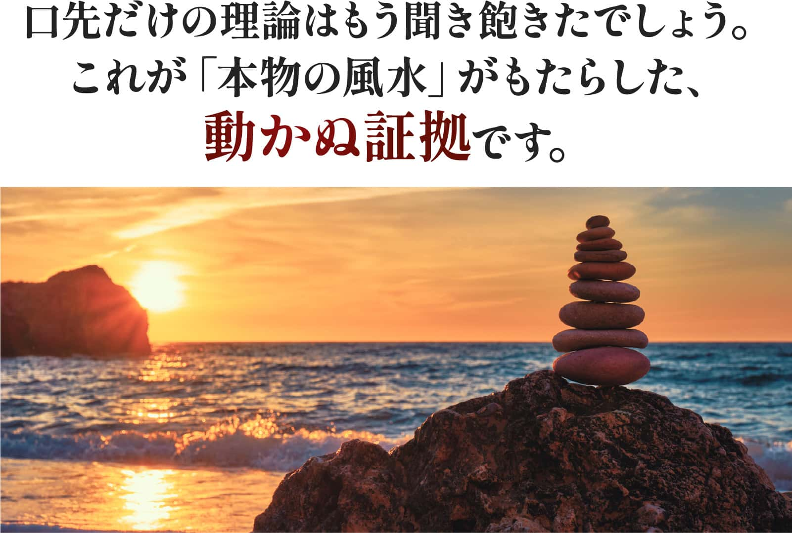
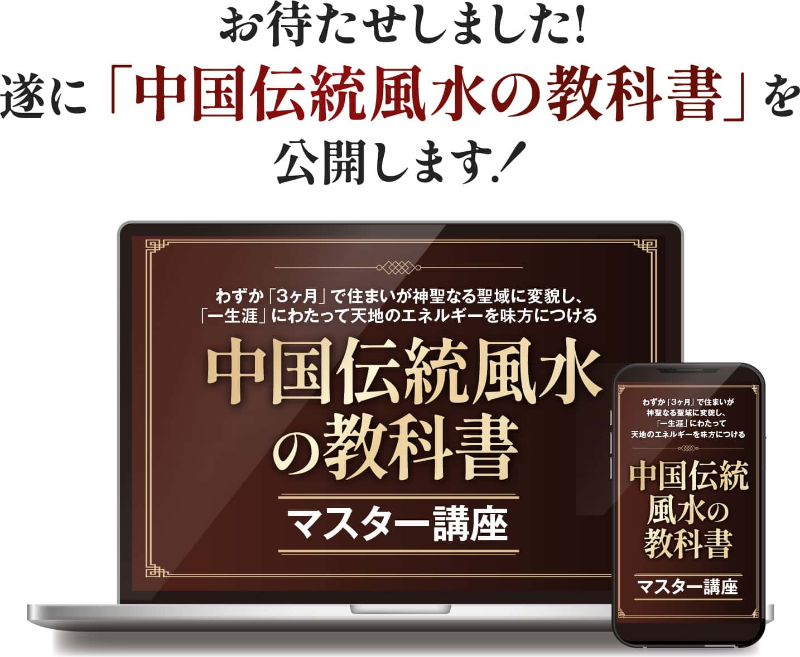
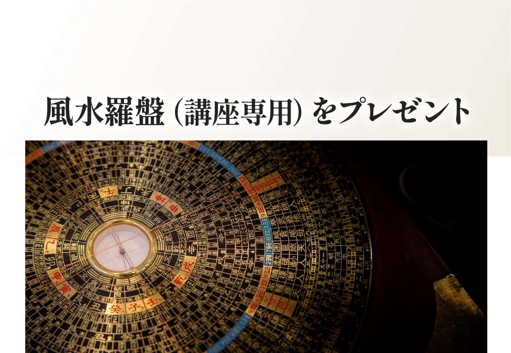
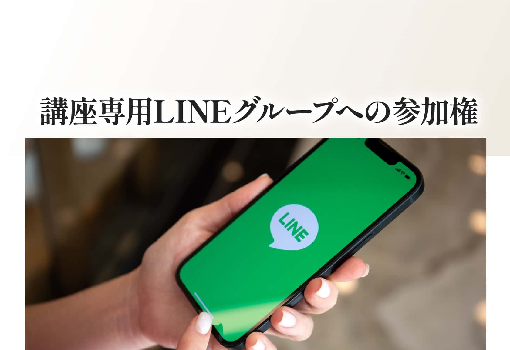

マスター講座に参加したい方、興味がある方は、
こちらから60分間の個別説明会にお申し込みください
※講座は動画から直接お申し込みできません。まず60分お話しします
個別説明会のお申し込み期限：○月○日（○）23:59（本番では登録日＋4日が自動表示）

この手紙を読んでいるあなたは、きっと、ご自身の人生をより良くしようと、努力を重ねてきたはずです。
しかし、その結果はどうだったでしょうか。
人間関係の悩み、つきまとう健康への不安、停滞するビジネス。
心のどこかで「何かが違う」「これじゃない」と感じながらも、何が間違っているのか分からず、ただ時間だけが過ぎていく。
その感覚、あなたの直感は、完全に正しいのです。
断言します。あなたの努力が足りないわけではありません。
あなたがこれまで良かれと思って頼ってきた知識こそが、そもそも「本物の風水」ではなかったのです。
日本で「風水」として知られている情報の99%は、実は「家相」という日本独自の考え方であり、本物の風水とは全くの別物です。
家相は「鬼門に玄関を置いてはいけない」といった固定的な禁忌ばかりを押し付け、現代の住宅事情ではほとんどの家を「悪い家」と断定します。そして何より、家相には「悪い」とされた場所への解決策がほとんど存在しないのです。
これでは、袋小路にはまるのは当然です。
一方で、スターバックスやアップル、さらにはアメリカ大統領執務室といった世界のトップレベルの組織が、なぜ巨額の投資をしてまで「本物の風水」を取り入れるのでしょうか？
それは、彼らが「結果を出すための、再現性のある技術である」と知っているからです。
才能や能力、そして努力する真面目さも持ち合わせながら、ただ「本物の知識」を知らないというだけで、本来手にできたはずの成功や幸福を逃し続けている。
これほど理不尽なことがあるでしょうか。
あなたの人生が前に進まない根本原因は、ただ一つ。
進むべき道が描かれていない、偽りの地図を手に、努力を続けてしまっていることなのです。
しかし、もし。
この根本的な間違いに気づき、何千年にもわたって世界の支配者層だけが密かに受け継いできた「本物の風水」が記された真の地図を、あなたが手にすることができたなら…
あなたの人生は、一体どのように変わるのでしょうか？

偽りの地図を捨て、真の地図を手にしたあなたを想像してみてください。
そこにあるのは、単なる問題解決ではありません。
運気に「振り回される」人生の終わりと、運気を自ら「コントロールする」人生の始まりです。
朝、目覚めた瞬間から、体の奥底から活力がみなぎるのを感じる。昨日までの心身の重さが嘘のように消え去り、「今日も頑張ろう」と自然に思える毎日。それは、あなたの寝室が、生命エネルギーを最大限にチャージする完璧な空間へと変貌を遂げたからです。
ビジネスの現場では、これまで何をしても超えられなかった売上の壁をいとも簡単に突破し、面白いように成果が上がるようになります。老舗のお茶屋さんがリフォーム後に売上を2倍にし、その好調を3年以上も維持しているように、あなたの仕事場もまた、富とチャンスを引き寄せる「財運の源泉」となるのです。
家庭に目を向ければ、そこには以前とは比べ物にならないほどの調和と笑顔が溢れています。
原因不明の体調不良に悩まされていた家族が健康を取り戻し、学校に行けなかったお子さんが自らの意志で通い始める。あなたの家が、家族一人ひとりの運気を育む、温かい揺りかごになるのです。
これらは決して奇跡や偶然ではありません。
何千年もの歳月をかけて体系化された「本物の風水」がもたらす、再現性のある科学的な結果なのです。
「場所の運」「時の運」「本人の運」、この3つの要素を正確に読み解き、あなたのためだけに最適化された環境を創り出す。
それこそが、あなたが手にする「一生涯にわたって無敵の開運状態が続く」という究極の未来なのです。
これほどまでに豊かで、全ての物事が好転していく理想の未来。
それは、正しい知識さえあれば、誰にでも実現可能なのです。
しかし、現実のあなたとこの理想の間には、見えない、しかし決して越えることのできない「壁」が存在しています。
その正体とは、一体何なのでしょうか？

先ほどあなたが思い描いた、光り輝く理想の未来。
そして今、あなたが生きている、停滞した現実。
その間には、深く、暗い谷が広がっています。
その谷の正体とは、単なる「停滞」ではありません。
それは、あなたの人生から富、時間、そして可能性が静かに、しかし確実に奪われ続けている「継続的な損失」に他なりません。
考えてみてください。
あなたが間違った知識に時間を費やしている間、本物の風水を知る競合他社やライバルは、その環境の力を最大限に活用し、あなたとの差を容赦なく広げています。あなたが足踏みをしているまさにその瞬間も、彼らは次なるステージへと飛躍しているのです。
この差は、決して縮まることはありません。むしろ、時間と共に指数関数的に開いていくくだけです。
このまま、この見えない損失を、あと何年、何十年と許し続けますか？
「いつか変わるはずだ」という淡い期待は、もう捨ててください。
間違った地図を手に進む限り、あなたがたどり着くのは理想の未来ではなく、さらに深い絶望の谷底だけなのです。
このどうしようもない焦燥感。
「何かを見落としているのではないか」とうっすら感じていた、あなたのその直感。
その正体を突き詰めるために、一度、過去の具体的な「経験」に目を向けてみましょう。
なぜ、あなたの人生は思うようにいかないのか。その記憶こそが、この谷を越えるための最初のステップになるのです。
少し、思い出してみてください。
希望に満ちて新しい家に引っ越したはずなのに、なぜか家族の笑顔が消え、些細なことで口論が増えていく。原因不明の体調不良に、なぜか減っていく貯金。
「何かがおかしい」と感じながらも、その正体が何なのか、どうすればいいのか分からず、ただ無力感に苛まれた、あの時のことを。
あるいは、家を建てよう、リフォームしようと考えた時。
良かれと思って専門書を開けば、そこには「あれはダメ」「これもダメ」という無数の制限が並んでいる。解決策は何一つ示されないまま、ただがんじがらめになり、夢への一歩を踏み出すことすら諦めてしまった、あの時のことを。
あなたは、自分を責めたはずです。
「自分の気の持ちようだ」「もっと頑張りが足りないのかもしれない」と。
しかし、もしその一連の不幸や行き詰まりが、あなたの責任ではなかったとしたら？
もしあなたが、どれだけ努力しようとも、抗うことのできない「環境の影響」を受けていただけだとしたら？
そうです。あなたの努力が足りなかったわけではありません。
ただ、その目に見えない影響の正体と、それに対処するための「正しい知識」が、あなたの手元になかっただけなのです。
あなたのせいではなかった――この事実は、過去の苦しみからあなたを解放する、最初の鍵です。
しかし、なぜあなたは、その正しい知識に出会えなかったのでしょうか？
それは、あなた自身も気づかぬうちに、人生を縛り付ける「見えない制約」に囚われていたからなのです。

あなたが「間違った知識」に囚われていることで、どれほど深刻な事態を招いているのか。
ここで、一つの具体的なシーンを想像してみてください。
それは、あなたが人生最大の決断の一つ、「夢のマイホーム」を建てようとした時のことです。
家族の幸せを願い、あなたは「正しい家を建てよう」と、世間で良しとされる「家相」の知識を頼りに設計を始めます。
しかし、その瞬間から、希望に満ちた計画は、出口のない迷宮へと変わるのです。
リビングに最適な日当たりの良い南東は、鬼門の次に避けるべきとされている。
家族の健康を思ってキッチンを清潔な場所に置こうとすれば、別のルールに抵触する。
玄関を理想的な位置に動かせば、水回りの配置がすべて狂ってしまう。
良かれと思って採用した知識が、皮肉にもあなたの夢を雁首搦めにしていく。
希望に満ちていたはずの家族会議は、いつしか「なぜ普通に建てられないのか」という、やり場のない怒りが飛び交う修羅場に変わります。
これが、あなたが囚われている「制約」の正体です。
それは、解決策なきルールであなたを縛り付け、行動を麻痺させ、最も大切なものですら破壊していく、思考の牢獄なのです。
この「計画が頓挫する」という麻痺状態は、単なる一つの失敗談では終わりません。
それは、あなたの人生全体を静かに蝕んでいく、より深刻な「危機」の前兆に過ぎないのです。
もし、この制約に気づかぬまま進んだ先に、何が待ち受けているのか…
あなたが「思考の牢獄」に囚われたまま、この先も歩み続けるとどうなるか。
その先に待っているのは、緩やかな衰退ではありません。
あなたの人生における、あらゆる可能性が「永久に」失われるという危機です。
5年後のあなたを想像してください。
知識を持つライバルは、環境の力を追い風に、あなたのはるか先を走っています。
あなたが失った5年という時間、そしてその間に失った無数のチャンス。その格差はもはや「努力」という言葉では決して埋まらない、絶望的なものになっています。
あなたは、素晴らしい才能や能力を持ちながら、それを発揮する機会すら与えられないまま、本来なら達成できたはずの成功や幸福を、指をくわえて眺めるだけになるのです。
そしてあなたの心には、「あの時、もし違う道を選んでいれば…」という、一生消えることのない後悔だけが深く刻まれます。
これは脅しではありません。
間違った地図を頼りに進む者に、必ず訪れる結末です。
このまま、人生の主導権を明け渡し、後悔に満ちた未来を甘んじて受け入れますか？
それとも、この理不尽な運命に、魂の底から反旗を翻しますか？
あなたの奥底に眠る、たった一つの「決意」が、この危機的状況を根底から覆す、唯一の引き金となるのです。
後悔が確定した未来。才能を眠らせたままの時間。
これが、あなたが受け入れるべき結末なのでしょうか。
いいえ、そんなはずはありません。
なぜ、真摯に努力してきたあなたが、偽りの知識に道を阻まれ、人生を諦めなければならないのでしょう。
なぜ、家族の幸せを願うあなたの純粋な想いが、解決策なきルールによって、行き場を失わなければならないのでしょう。
この理不尽なシナリオを、これ以上受け入れる必要などないのです。
自分を責めるのは、もう終わりにしましょう。
間違った地図の上で、さまよい続ける日々は、今日この瞬間、終わらせるのです。
これは、誰かの救いを待つ物語ではありません。
あなたが自分自身の尊厳を取り戻し、自らの手で人生の舵を取り直す、静かな革命の始まりなのです。
この心の底から湧き上がる、静かで、しかし揺ぎない決意。
それこそが、あなたの人生を劇的に好転させる、最も尊いエネルギーです。
今、あなたの心は、偽りの知識が入る隙間なく磨き澄まされました。
本物を、確実な結果をもたらす「真の解決策」だけを、受け入れる準備が整ったのです。
あなたが自らの手で人生の舵を取り直すと決意した今、必要なのは気休めのテクニックではありません。
何千年もの歳月を生き抜いてきた、本物の叡智に基づいた「確実な結果をもたらす力」です。
この「本物の風水」を手にすることで、あなたは具体的に以下の変化と能力を獲得します。
まず、どんな空間のエネルギーをも瞬時に「見える化」し、最適化する能力が身につきます。
これは、あなたの家や職場を、単なる「箱」から、運気、健康、富を無限に生み出す「最強のパワースポット」へと変貌させる力です。現に、ある老舗のお茶屋さんは、この力によって店舗の売上を2倍にし、その成功を3年以上も維持し続けているのです。
次に、あなただけの「運の設計図」を解読し、人生のあらゆる選択を成功へと導く能力が手に入ります。
あなた固有の運気特性（本命卦）を知ることで、もう二度と、あなたに合わない間違った努力に時間とエネルギーを浪費することがなくなります。ある受講生の夫は、この法則に則って寝室の位置を変えただけで、仕事でのミスが劇的に無くなりました。
さらに、「時の運」を読み解き、人生の波を乗りこなす能力もあなたのものになります。
運気が高まる時期には最大の成果を得て、運気が低下する時期には賢明に守りを固める。2024年から始まった新しい20年のサイクルを正確に理解し、時代の追い風を最大限に受けることができるようになります。あなたはもう、運気に翻弄されるのではなく、運気を戦略的に活用する側に回るのです。
これらの力は、一度身につければ、誰にも奪われることのない、あなたの一生の財産となります。
これほどの変革を可能にする、体系化された叡智。
これこそが、偽物の風水に人生を狂わされた人々を救うために、一人の専門家が25年以上の歳月をかけて、血と汗の滲むような探求の末に完成させた、唯一無二の学習システムなのです。

これほど強力な変革をもたらす学習システムは、一体どのようにして生まれたのか。
少しだけ、私の話をさせてください。
25年以上前、私は一級建築士としてキャリアをスタートさせました。しかし、設計だけでは解決できないお客様の悩みに直面する中で、「何か」が存在することに気づいたのです。
その答えを求め、私はまず日本の「家相」を学びました。しかし、すぐにその限界に突き当たります。現代の住宅に当てはめようとすると矛盾だらけで、解決策は何一つ示されない。お客様の悩みに応えられないどころか、思考停止に陥らせるだけの知識に、私は強い憤りを感じました。
「本物を知らなければならない」
その一心で、私は本物の風水の師を探し、会社員を続けながら東京まで通い詰め、何年もかけて師から口伝でのみ伝わる秘伝を学びました。それは書物には決して記されない、実践と検証を繰り返す、血の滲むような探求の日々でした。
5000年の歴史を持つ叡智と、現代建築の専門知識。この二つが融合したとき、どんな環境でも再現性のある結果を出す、唯一無二のメソッドが生まれたのです。
このメソッドは、私がこれまで大手衣料メーカーや東証一部上場企業の経営者といったクライアントからの依頼を含め、延べ4,000件以上の物件を手がける中で磨き上げてきた、私の25年間の探求のすべてです。
この講座は、あなたに同じ25年を費やしてほしくない、という想いから生まれました。
私が生涯をかけてたどり着いた「本物の叡智」を、あなたに最短距離で手渡すために、このシステムを開発したのです。
一人の建築士の人生を懸けた探求の末に完成した、この「本物の風水」。
この知識が、実際に人々の人生にどれほど劇的で、現実的な変化をもたらしてきたのか。
次は、その圧倒的な実績の数々をお見せします。

一人の一級建築士が、人生を懸けて体系化した「本物の風水」。
その知識が、机上の空論ではなく、現実を根底から変える力を持つことを、今ここで証明します。
【衝撃】わずか10日で、不登校の子供が自ら学校へ
玄関と子供部屋の環境を本物の風水理論に則って調整したところ、わずか10日後、お子さんが自らの意志で学校に通い始めたのです。これは、環境が人の意識と行動に、いかに直接的な影響を与えるかを示す衝撃的な実例です。
【信頼】売上は2倍、深刻な健康問題は解消
大阪で代々続く老舗のお茶屋さん。店舗と住居の風水を全面的に改善した結果、奥様の体調は劇的に回復し、通院が不要になるまでに。さらに驚くべきことに、店舗の売上は以前の2倍に増加し、その好調は3年以上も続いているのです。
【確信】あなたと同じように学んだ「普通の人々」が手にした、驚きの成果
しかし、これらの成果は特別な才能を持つ人だけの話ではありません。あなたと同じように、ゼロから本物の風水を学んだ受講生たちも、次々と人生を好転させています。
- 人間関係が劇的に変わり、ご主人の仕事のミスも無くなった、まさよさん。
- 800万円の修理費がゼロになり、経営する賃貸6室が満室になった、みまゆさん。
- ご主人の会社の業績が「爆上がり」し、エルメスのバーキンのパーソナルオーダーまで実現させた、ゆみこさん。
これらは奇跡ではありません。
正しい知識を学び、正しく実践すれば、誰にでも起こりうる「必然の結果」なのです。
これらは、数ある成功事例の、ほんの一部に過ぎません。
では、なぜこれほどまでに、人種、職業、年齢を問わず、劇的な成果が再現され続けるのか。
その秘密は、これからお話しする、この講座の「システムそのもの」に隠されています。
いよいよ、その全貌を公開します。

これまで多くの方から、「いつ本格的な風水を学べるのですか？」というリクエストをいただいていた「中国伝統風水の教科書」。
ついに、その全容を明かす時が来ました。
この教科書は、私が25年以上の歳月をかけて開発し、すでに多くの実践者が驚異的な結果を出している、革新的な風水学習システムです。
なぜ、これほどの成果が出せるのか？
その全体像を、ここでお話しします。詳しい中身は、面談でじっくりお伝えします。
3つの「運」を統合して学ぶ、唯一無二の学習法
従来の風水教育では、「場所の運」だけを教えることがほとんどでした。
しかし、本物の中国伝統風水では、3つの「運」を統合的に理解することが不可欠です。
「場所の運」「時の運」「本人の運」
この3つの運を段階的に、そして統合的に学ぶことで、真の風水マスターへの道筋が開かれるのです。
講座は、この動画からは
直接お申し込みできませんなぜ、いきなり申し込めないようにしたのか
3本の動画を最後までご覧いただき、ありがとうございました。
ここまで見てくださったあなたは、きっと「本物の風水を自分で使えるようになりたい」「家族や仕事の流れを、自分の手で整えたい」そう感じているのではないでしょうか。
その気持ちがあるなら、なおさら、講座の申し込みボタンをここに置くことはしません。
まず一度、私と直接お話しする「入会事前確認」を受けていただきます。オンライン（Zoom）で約60分、無料です。
理由は3つあります。
コースも、価格も、お支払いの方法も、あなたの今の状況によって「最適」が変わるから。
まずは初級だけで自宅を整えたい方と、最初から発展まで一気に学んで仕事に活かしたい方では、おすすめするものが違います。
お話ししないまま入っていただくのは、私自身が不安だから。
「本当にこの人に合っていたのかな」と後から心配になるくらいなら、先に60分お話しした方がお互いのためです。
本気で人生を変えたい方と、しっかり向き合いたいから。
25年間、風水の現場で見てきて分かったのは、結果を出す人は「決めて、動く人」だということ。その最初の一歩を、私と一緒に踏み出してほしいのです。
※動画の中では「30分」「3日以内」とお伝えしましたが、
現在は面談を約60分に、受付を第3話の公開期間（5日間）に変更しています。
入会事前確認（約60分）で
行うこと売り込みの場ではなく、「あなたに合う形」を一緒に決める場です
60分でやることを、先にすべてお見せします。
1今のあなたの環境とお悩みを伺います
住まいのこと、仕事のこと、ご家族のこと。「玄関はどんな感じ？」「寝室はどっち向き？」といったところから、風水の目線で今の状態を一緒に見ていきます。
つまり、面談の前半だけでも、ちょっとした簡易鑑定になります。
2初級・応用・発展のどれが合うかを診断します
全く初めての方でも大丈夫です。まずは初級だけで自宅を鑑定できるようになりたいのか、応用・発展まで一気に学んでビジネスにも活かしたいのか。あなたの目的に合わせて、一緒に決めます。
3特別価格とお支払い方法をご案内します
この動画講座をご覧いただいた方だけの特別価格を、面談の中でお伝えします。一括・分割など、無理のないお支払い方法もその場でご相談ください。
4お互いの相性と方向性を確認します
風水は「学んで終わり」ではなく、講座が終わってからも実践相談や質問ができる環境で長く続いていくものです。だからこそ、最初に「一緒にやっていけそうか」をお互いに確かめたいのです。
残りの時間は、あなたからのご質問にお答えする時間です。最後に「どうされますか」と伺いますが、その場で決めなくて大丈夫です。持ち帰って考えたい方は、面談から24時間以内にお返事をいただく形にしています（特別価格でのご案内は、この24時間以内のお返事が対象です）。
面談は約60分が目安です。ご質問が多い場合は少し延びることもありますが、その場合も事前にお伝えします。
お申し込みの流れ
今のお悩み、風水を学びたい理由、ご希望の学び方などを伺います。「まだ何も分からない」という方も、そのままお書きください。
フォームの内容を確認のうえ、面談の候補日をご案内します。なお、ご記入いただいた内容によっては（私がお役に立てないと判断した場合など）面談をお断りさせていただくことがございます。あらかじめご了承ください。
上でお伝えした4つのことを、一緒に確認します。
「学びたい」「一緒にやっていけそう」とお互いに思えたら、その場でお手続きの方法をご案内します。もちろん、面談の場で決めなくても大丈夫です。
この講座で身につくこと3つのステップ。詳しい中身は面談でお話しします
風水の基礎と環境の見方を学び、自分と家族の空間を自分で整えられるようになります。初級が終わる頃には、自宅を自分で鑑定でき、「私の寝る位置はここがいい」まで分かるようになります。
初級とは違う運気の流れを読み、時代と状況に応じた判断ができるようになります。財の運気も理解できるようになり、最終回には実習会があります（羅盤をプレゼントします）。
これまでのすべてを総合的に見る判断力がつきます。部屋に入った瞬間に気の流れが分かる、ビジネスにも活かせるレベルを目指します。
各コースとも全6回、3ヶ月以内で修了します。オンライン（Zoom）で自宅から参加でき、毎回、予習動画と復習講座の2段階で無理なく身につきます。講座が終わった後も、実践の練習会・相談・質問ができる環境があります。
初級から始めるか、初級・応用・発展を一気に学ぶ「フルパック」にするか。どちらが合うかは、面談で一緒に決めましょう。
さらに、学習をサポートする
特典をご用意しました講座での学びを確実に実践していただくために
面談を経てご入会いただいた方には、次の特典をご用意しています。
1Zoom風水特別セミナーへのご招待
毎月〜2ヶ月に1回ほど開催している、本来は有料の風水特別セミナーにご招待します。講座で学んだことを、実際の事例で深める場です。

なぜ、この羅盤が風水実践に不可欠なのか
動画でもお話ししたように、本物の風水を実践するには正確な方位測定が必要です。
応用（中級）の実習会にご参加の方に、実習で使用する風水羅盤（風水コンパス）をプレゼントいたします。
- 講座での実習に必要な基本機能を完備 → 8方位のエネルギー特性を正確に測定できる、講座専用の羅盤です。応用（中級）の最終回で行う実習会で実際に使用し、気の流れを読み取る技術を身につけていただきます。
- 自宅での風水改善にも活用可能 → 講座修了後も、ご自宅の玄関、寝室、リビングなどの方位を正確に測定し、継続的な風水改善にお役立ていただけます...

なぜ、質問できる環境が学習成果を左右するのか
動画でお話ししたように、風水は実践してこそ意味があります。
学習中の疑問や不安を即座に解決できるよう、講座専用のLINEグループにご参加いただけます。
- 講座期間中の質問にお答えします → 学習内容についての疑問、実践での困りごとなど、講座期間中はLINEグループで質問にお答えします。同じ悩みを持つ受講生同士の交流も生まれます...
- 受講生同士の情報共有で学習効果向上 → 風水改善の成功体験や気づきを受講生同士で共有することで、一人では得られない多様な学びを得ることができます...
なぜ、録画があることで学習効果が高まるのか
お仕事の都合で参加できない回があっても大丈夫です。
全講座の録画をご視聴いただけるため、自分のペースで復習することができます。
- 欠席した回も安心 → やむを得ず欠席された回も、録画で学習内容を完全にカバーできます。重要なポイントは何度でも繰り返し視聴可能です...
- 復習による理解の深化 → 風水は奥深い学問です。一度の受講では理解しきれない部分も、録画による復習で確実に身につけることができます...
実際に学んだ方の変化
まさよさん（会社員）
ご主人が慢性的な疲労と仕事のミスに悩んでいました。講座で学んで寝る場所を変えたところ、熟睡できるようになり、ミスがなくなって、今は楽しく仕事に取り組めているそうです。ご主人は「奥さんが学んでくれたおかげ」と喜んでいらっしゃいます。
中道さん
娘さんの難関試験の前に、机の位置を変えました。それまで休日にダラダラしていた娘さんが集中できるようになり、見事に合格。「風水なんて」と思っていた娘さんが、「風水はすごい」と言うようになったそうです。
小池ゆみさん
家庭運を良くしたくて学び始め、ご主人の会社も自分で風水をされました。従業員の運気や人間関係が見直され、売上も大きく伸びたとのこと。ご主人から「学んでよかったな」と褒められたそうです。
よくあるご質問個別説明会（入会事前確認）の前に、よく聞かれること
気になる項目をタップすると開きます。ここに無いことも、面談で遠慮なく聞いてください。
面談で売り込まれませんか？
まだ受講するか決めていないのですが、申し込んでいいですか？
風水の知識がまったくありません。ついていけますか？
どのコースにするか迷っています
お金のこと・支払い方法のことも面談で相談できますか？
家族に相談してから決めたいのですが
自宅が賃貸・マンションでも、風水は使えますか？
仕事や家事で忙しいのですが、続けられますか？
面談は本当に60分ですか？
フォームを送れば、必ず面談してもらえますか？
入会事前確認の受付は
5日間限定です
入会事前確認のお申し込みは、○月○日（○）23:59（本番では登録日＋4日が自動表示） までに限らせていただきます（第3話の公開期間中・5日間）。特別価格のご案内も、この期間中に面談を申し込まれた方が対象です。（動画では「3日以内」とお伝えしましたが、5日間に延長しています）
まずは、事前フォームの送信だけでも先に済ませておいてください。面談の日程は、その後で調整できます。
最後に
お話ししないまま入っていただくのは、私自身も不安です。
だからこそ、まず60分、直接お話しさせてください。あなたが今どこで困っているのか、どんな未来にしたいのか、聞かせてください。
そして、あなたに本当に合う形を、一緒に決めましょう。
あなたの玄関は、良い気の入り口になっていますか。
寝室で、ちゃんと休めていますか。
環境は、変えた瞬間から未来の流れが変わり始めます。その最初の一歩を、ここから一緒に踏み出せたら嬉しいです。
天野千恵里
お申し込み期限：○月○日（○）23:59（本番では登録日＋4日が自動表示）
最後に、私の想い
最後にお伝えしたいのは、私の個人的な想いです。かつて、一級建築士でありながら、設計だけでは人を幸せにできないという現実に、私は絶望しました。
25年以上の歳月を経て、ようやくたどり着いたこの叡智を、なぜ今、私はあなたに届けたいのか。それは、あなたに、私と同じように何十年もの時間を、遠回りしてほしくないからです。一人でも多くの人に幸せになってほしい。
その一心で、私の知識と経験のすべてを、この講座に注ぎ込みました。あなたと共に、素晴らしい未来を歩めることを、心から願っています。